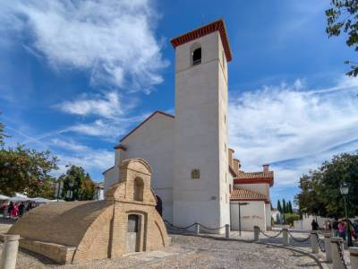
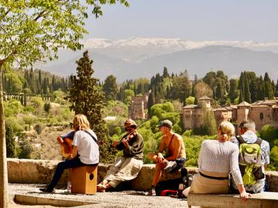
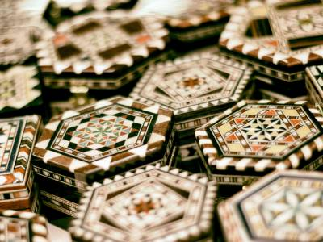

🔎

RUTA PATRIMONIO
Ruta de los Aljibes Nazaríes
Recorrido por los aljibes medievales ocultos entre las calles del Albaicín
🕒 2h 30min • Baja • No accesible

RUTA NATURALEZA
Miradores alternativos del Albaicín
Cuatro miradores menos frecuentados con vistas a la Alhambra y Sierra Nevada
🕒 1h 45min • Media • No accesible

RECURSO ARTESANÍA
Taller de taracea
Taller de taracea del Carmen de la Victoria. Artesanía de marquetería nazarí en un taller familiar de tercera generación
🕒 45min • Baja • ♿ Accesible